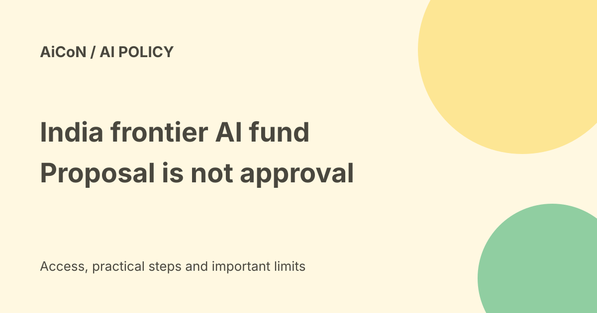

India frontier AI fund proposal: reported amount versus approved schemes
September reporting describes a proposed National Frontier AI and Compute Fund, with a possible government anchor investment of ₹15,000-20,000 crore. The reports say its design remains under consultation. The official sources checked for this guide confirm the existing IndiaAI Mission and compute support, not an approved application route for the proposed fund.

What is being proposed?
Inc42, citing Economic Times reporting, describes a fund intended to provide long-term capital for Indian frontier AI companies, GPU clusters and specialised data centres.
Frontier AI refers here to advanced model development. GPUs are processors used for many AI workloads. Developing models and building compute infrastructure can require large investments before revenue arrives.
The amount is reported, not a final grant
The report gives ₹15,000-20,000 crore as a possible government anchor investment. It says the final fund size, structure, governance and role of government capital are undecided.
An anchor investment is money intended to draw in other investors. It is not a cash reward for every startup, a student scholarship or a confirmed public entitlement.
Possible structure
Reporting describes a potential SEBI-regulated Category I alternative investment fund and a possible 50:50 government-private capital model.
Those are options under discussion. Do not describe the ratio, registration or investment committee as settled rules. A proposed structure is not proof that a fund has been registered.
What the roundtable supports
A public IndiaAI account post describes a financing roundtable on 24 September involving compute providers, energy companies and financiers. It mentions financing models, demand visibility and reliable, competitively priced power.
That supports the fact of a financing discussion. It does not establish that the reported fund amount was approved or that applications opened.
Demand-linked compute
The report says policymakers were considering linking infrastructure finance to actual demand, through capacity commitments or commercial arrangements.
The aim would be to avoid expensive GPU capacity sitting unused. This is a reported design idea, not a published contract or promise of subsidised capacity to a particular company.
Existing IndiaAI Mission is separate
A PIB release dated 6 August 2026 states that the IndiaAI Mission was approved in March 2024 with ₹10,371.92 crore over five years.
The release also lists fifteen empanelled compute providers and 237 projects approved for subsidised compute, with 93.18 lakh GPU hours sanctioned. These are dated official figures for the existing mission, not the proposed fund's budget.
Current compute routes
The official IndiaAI compute-capacity page describes cloud services for eligible academia, MSMEs, startups, research organisations, government and other entities registered and approved by IndiaAI.
Registration and approval matter. Subsidised access is not automatically free or available to every individual. Follow the current programme's own terms and application process.
Can I apply for the proposed fund?
No approved NFAICF application form, eligibility document, application deadline or fee was established in the sources checked on 7 October.
This is a bounded verification result, not proof that no later announcement can exist. Look for an official notification before acting. Do not pay an intermediary for a guaranteed allocation from a reported proposal.
What a real announcement should clarify
- The legal vehicle and administering organisation.
- Approved investment size and capital commitments.
- Eligible companies and infrastructure projects.
- Investment, subsidy or loan terms.
- Application and review process.
- Governance, reporting and conflict-of-interest rules.
- Official contacts and deadlines.
A news headline cannot substitute for those documents.
A practical route for an interested team
- Separate current IndiaAI programmes from the reported fund.
- Use official programme pages for present access.
- Check eligibility, required evidence and costs.
- Keep a realistic model and compute budget.
- Watch for a formal fund notification.
- Read the actual terms before submitting company information.
- Reject guaranteed funding claims from unrelated contacts.
No application, registration or financial commitment was made for this guide.
What changed since the original post?
We keep the proposal qualification and add the difference between reported anchor capital, an approved mission budget and a working application route. We do not turn consultation into a launched scheme.
Frequently asked questions
Is ₹20,000 crore already available to applicants?
That was not established.
Is this the existing IndiaAI Mission?
No. The reports describe a possible additional vehicle.
Was an application submitted?
No.
Sources: Reported proposal and unsettled design · IndiaAI financing roundtable record · PIB existing mission budget and dated figures · Official current compute-capacity route. Checked 7 October 2026.